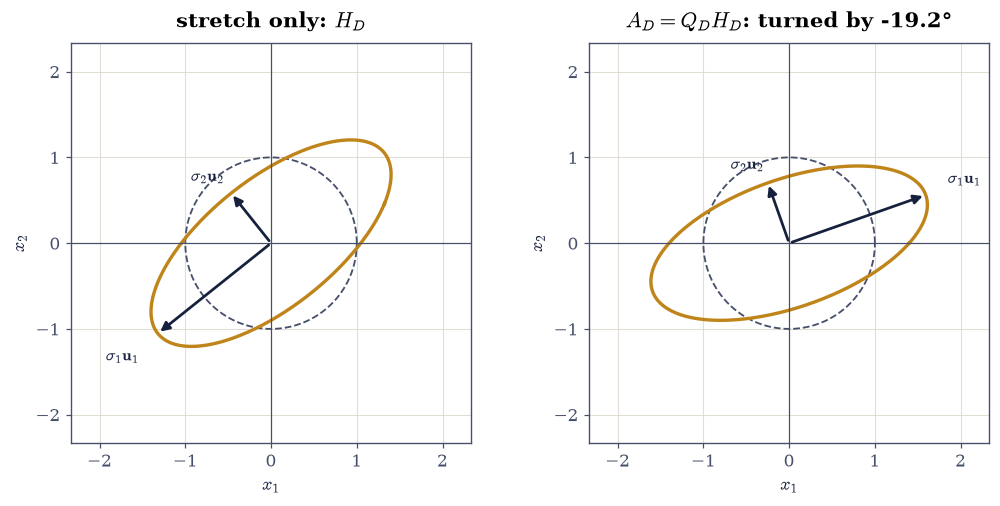
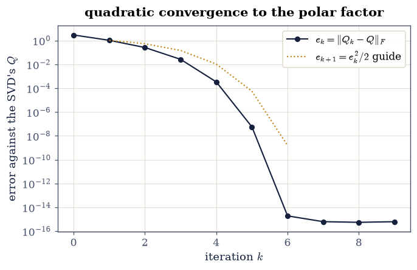
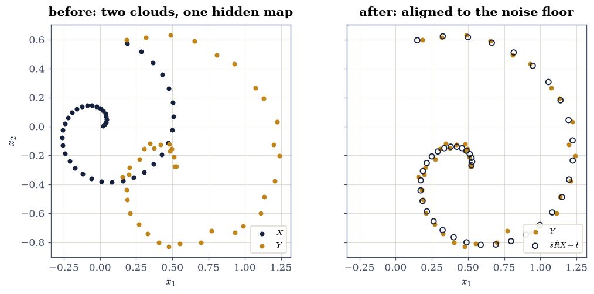

4.5 The Polar Decomposition and Procrustes#
Notebook overview#
§4.1 read the SVD as rotate–stretch–rotate. This notebook regroups the same three factors into two: every square matrix is one rotation times one symmetric stretch, \(A = QH\) — the matrix version of writing a complex number as \(re^{i\theta}\). The factor \(Q\) is not merely a rotation associated with \(A\); it is the nearest orthogonal matrix to \(A\) in the Frobenius norm, and we certify that the way §4.2 certified Eckart–Young: \(10^{4}\) random orthogonal challengers, every one of which loses by a measured margin.
Nearness to a rotation is not an ornament — it is a problem industries solve daily. Given two point clouds, one a rotated (possibly scaled, shifted, noisy) copy of the other, the orthogonal Procrustes problem asks for the rotation that best aligns them, and its exact solution is the polar factor of a \(2\times2\) correlation matrix: one SVD, no iteration. Crystallography, protein-structure comparison and shape statistics all run on this identity, usually under Kabsch’s name, and the notebook builds it from scratch — including the determinant correction that keeps a reflection from masquerading as a rotation.
How to read a check. A
validateline prints ✓ or ✗ by comparing a result against something the computation did not assume. A ✗ flags a mismatch to investigate, never a verdict on its own.
Scope. The polar decomposition and its Newton iteration are Higham [Hig08] Chapter 8; Golub and Van Loan [GVL13] §6.4 treats Procrustes. The closed-form rotation is Schönemann’s [Schonemann66]; the determinant correction is Kabsch’s [Kab76].
Theory in brief#
The factorization#
From the SVD \(A = U\Sigma V^{\top}\) of a square \(A\), regroup:
\(Q\) is orthogonal because it is a product of orthogonal factors; \(H\) is symmetric positive semidefinite because its eigenvalues are the singular values. For invertible \(A\) the pair is unique, and \(H\) is the symmetric positive semidefinite square root
since \(H^2 = V\Sigma^2V^{\top} = A^{\top}A\) and a psd matrix has exactly one psd square root.
Nearest orthogonal matrix#
Among all orthogonal \(W\),
The proof is a trace computation the exercises verify numerically: \(\lVert A - W\rVert_F^2 = \lVert A\rVert_F^2 + n - 2\operatorname{tr}(W^{\top}A)\), so minimising the distance means maximising the trace, and
with equality exactly when \(V^{\top}W^{\top}U = I\), i.e. \(W = UV^{\top} = Q\): an orthogonal matrix has entries at most 1, so the trace against a diagonal \(\Sigma\) is largest when the diagonal entries are all 1.
Newton’s iteration#
The polar factor is also the fixed point of the deceptively simple
the matrix version of Heron’s \(x \leftarrow \tfrac12(x + 1/x)\) for \(\sqrt{1}\), applied to the singular values: each \(\sigma\) flows to 1 at a quadratic rate while the singular vectors never move, so the iterates converge to \(UV^{\top}\) with the error squaring at every step [Hig08].
Procrustes, and the Kabsch correction#
Stack \(n\) points as the rows of \(X, Y \in \mathbb{R}^{n\times2}\) and seek the orthogonal \(R\) making \(\hat{\mathbf{y}}_i = R\mathbf{x}_i\) fit best:
by the same trace argument as Eq. 216 — Procrustes is the nearest-orthogonal-matrix problem for the correlation matrix \(X^{\top}Y\) [Schonemann66]. The unconstrained optimum may be a reflection (\(\det \hat R = -1\)); when the application demands a proper rotation,
flips the least-important direction and is optimal among \(\det = +1\) matrices [Kab76].
The left-handed twin#
Regrouping the SVD the other way gives \(A = H'Q\) with \(H' = U\Sigma U^{\top}\) — stretch after rotating:
The rotation is the same \(Q\) in both; the stretches differ unless \(A\) is normal, and the gap \(\lVert H - H'\rVert\) is a meter for how far \(A\) is from normality — the theme of §3.4, met again from the SVD side.
Setup#
Data only: the worked \(3\times3\), the display \(2\times2\) for the geometry panels, and the Procrustes scene (a seeded spiral of 40 points, the planted rotation, and its noisy image). Every method — the polar factorization, Newton’s iteration, the Procrustes solvers — is built in the exercises, where it is the lesson.
The Setup below holds this notebook’s data and instruments — nothing you are asked to build. It is collapsed so the building stays yours; expand it whenever you want the details.
Exercise 1: One rotation, one stretch#
Eq. 213 says the SVD’s three factors regroup into a rotation and a symmetric stretch, and Eq. 214 says the stretch is the unique psd square root of \(A^{\top}A\). This exercise builds the factorization and checks both claims against routes that share no code.
Part a) Write polar(A) returning (Q, H) from one call to
np.linalg.svd(A): \(Q = UV^{\top}\) and \(H = V\Sigma V^{\top}\) (as
Vt.T @ (s[:, None] * Vt)). On the \(3\times3\) A_WORK of the Setup,
gate \(\lVert A - QH\rVert_{\max} < 50\,\varepsilon\,\lVert A\rVert_2\),
\(\lVert Q^{\top}Q - I\rVert_{\max} < 50\,\varepsilon\), and \(H\) symmetric
to \(50\,\varepsilon\,\lVert A\rVert_2\) with smallest eigenvalue above
\(-50\,\varepsilon\,\lVert A\rVert_2\) (one-sided: its exact eigenvalues
are the singular values \(3.77, 1.87, 0.89\), all positive).
Write this one yourself — the factorization is the notebook, and
every exercise below runs on the polar you build here.
Part b) Gate Eq. 214 against an independent route:
\(\lVert H^2 - A^{\top}A\rVert_{\max} < 100\,\varepsilon\,\lVert
A\rVert_2^2\), and \(H\) against scipy.linalg.sqrtm(A.T @ A) — a Schur
method sharing no code with the SVD — to \(10^{-11}\) relative in the
Frobenius norm.
Part c) See the regrouping on the display matrix A_DISP
(\(2\times2\)): draw the unit circle’s image under \(H_D\) alone (a pure
stretch along the right singular directions, no rotation) beside its
image under the full \(A_D\) — the same ellipse, turned by the polar
angle \(\theta_Q = \operatorname{atan2}(Q_{21}, Q_{11}) = -19.2°\).
A = QH to 2.2e-15; Q'Q = I to 7.8e-16; H symmetric to 1.1e-16, eigenvalues [0.8873 1.8677 3.7715]
H^2 = A'A to 4.9e-15; H vs scipy sqrtm (Schur route): 1.1e-15 relative
Validation 1#
✓ A = QH reconstructs the matrix (Eq. 1) [one SVD, regrouped — the rotation-times-stretch reading of 4.1's rotate-stretch-rotate [2.22045e-15 < 4.18726e-14]]
✓ Q is orthogonal to rounding [a product of exactly orthogonal factors, spoiled only by arithmetic [7.77156e-16 < 1.11022e-14]]
✓ and H is symmetric positive semidefinite (one-sided) [symmetry gap 1.1e-16; smallest eigenvalue 0.8873, which is sigma_3 = 0.887 — the eigenvalues of H are the singular values of A]
✓ H squares back to A'A (Eq. 2) [the defining property of the square root, checked as arithmetic [4.88498e-15 < 3.15848e-13]]
✓ and the SVD's H matches the Schur-method square root [np.linalg.svd against scipy.linalg.sqrtm: two factorizations sharing no code, one psd square root — uniqueness, measured [1.06387e-15 < 1e-11]]
True

Fig. 89 The polar regrouping of the \(2\times2\) display matrix \(A_D\) (Eq. 1). Left: the unit circle’s image under the stretch \(H_D\) alone — an ellipse with semi-axes \(\sigma_1 = 1.689\) and \(\sigma_2 = 0.746\) along the right singular directions, unrotated. Right: the image under the full \(A_D\) — the congruent ellipse, turned by the polar angle \(\theta_Q = -19.2°\). Everything \(A_D\) does to shape is in \(H_D\); everything it does to orientation is in \(Q_D\).#
Exercise 2: The nearest orthogonal matrix#
Eq. 215 claims optimality over every orthogonal matrix — a claim quantified over a continuum, which sampling can refute but never prove. As with Eckart–Young in §4.2, we do both things honesty allows: race a large random field against \(Q\), and verify the exact trace identity the proof runs on.
Part a) Draw \(10^{4}\) random orthogonal challengers as np.linalg.qr
factors of seeded \(3\times3\) Gaussians (a draw that lands on both
determinant signs), and gate that none comes closer to A_WORK in
the Frobenius norm than \(Q\) does: \(\min_W \lVert A - W\rVert_F >
\lVert A - Q\rVert_F = 2.906\). Report the best challenger’s margin.
Part b) Gate the mechanism Eq. 216: \(\operatorname{tr}(Q^{\top}A) = \sum_i\sigma_i = 6.5265\) to \(10^{-12}\) relative, and every challenger’s trace strictly below it — the distance contest and the trace contest are the same contest, by the algebra in the theory section.
||A - Q||_F = 2.9064; best of 10,000 challengers: 3.8197 (1.31x farther)
tr(Q'A) = 6.526493 = sum sigma = 6.526493; best challenger trace 3.4548
Validation 2#
✓ no orthogonal challenger in 10^4 beats the polar factor (Eq. 3) [best 3.820 against 2.906 — sampling cannot prove a continuum claim, but it can lose to one, and it did, 1.31x over]
✓ and the trace identity behind the proof holds exactly (Eq. 4) [tr(Q'A) = 6.526493 attains sum sigma while the best challenger reaches 3.4548: minimising distance IS maximising trace]
True
Exercise 3: Newton’s iteration, and its quadratic engine#
Eq. 217 finds \(Q\) without an SVD — the workhorse in codes that need only the orthogonal factor. Its convergence is quadratic: each singular value of the iterate obeys Heron’s scalar recurrence toward 1, so the error squares at every step.
Part a) Write newton_polar(A, iters) returning the list of
iterates \(Q_0 = A, Q_1, \dots\) of Eq. 217, each step one
np.linalg.inv and a transpose. Run 9 iterations on A_WORK, measure
\(e_k = \lVert Q_k - Q\rVert_F\) against Exercise 1’s SVD factor, and
gate: \(e_k\) first drops below \(10^{-12}\) by iteration \(k \le 8\)
(measured: 6), and the final error sits below \(10^{-13}\).
Part b) Gate the engine: for every consecutive pair with \(e_k \in (10^{-7}, 1)\) — the clean band above the rounding floor — the ratio \(e_{k+1}/e_k^2\) stays below \(2\) (the theory constant is \(\approx 1/(2\sigma_{\min}) = 0.56\); measured ratios climb from \(0.40\) to \(0.50\)). Linear convergence cannot fake this: squaring is the signature.
Part c) Draw \(e_k\) on a log axis: the doubling slope of quadratic convergence, six iterations from \(O(1)\) to the floor.
e_k = 2.91e+00, 1.04e+00, 2.57e-01, 2.63e-02, 3.36e-04, 5.64e-08, 1.90e-15, 6.23e-16, 5.49e-16, 6.20e-16
first below 1e-12 at iteration 6; final 6.2e-16
e_(k+1)/e_k^2 in the clean band: 0.40, 0.49, 0.50
Validation 3#
✓ Newton reaches the polar factor without an SVD (Eq. 5) [below 1e-12 at iteration 6 of 9, final error 6.2e-16 against the SVD's Q — two routes, one rotation]
✓ and the error genuinely squares: quadratic convergence, gated [e_(k+1)/e_k^2 at most 0.50 in the clean band, against a theory constant near 1/(2 sigma_min) = 0.56 — checked only above the 1e-7 floor, where squaring has room to show (5.4's window rule)]
True

Fig. 90 Newton’s iteration (Eq. 5) on the \(3\times3\) worked matrix: the error \(e_k = \lVert Q_k - Q\rVert_F\) against the SVD’s polar factor, on a log axis. The slope doubles at every step — the signature of quadratic convergence — carrying the iterate from \(e_0 = 2.9\) to the \(10^{-15}\) rounding floor in six iterations; the dotted guide shows the squaring recurrence \(e_{k+1} = 0.5\,e_k^2\) seeded at \(e_1\).#
Exercise 4: Procrustes: the best rotation is a polar factor#
Eq. 218 solves the alignment problem in closed form. The
Setup planted it: Y_CLOUD is X_CLOUD rotated by \(\theta = 0.7\) and
jittered at \(\sigma_N = 0.02\) per coordinate.
Part a) Write procrustes_rotation(X, Y) returning
\(\hat R = VU^{\top}\) from np.linalg.svd(X.T @ Y), so that
\(\hat{\mathbf{y}}_i = \hat R\mathbf{x}_i\). Recover the planted rotation
and gate the angle \(\hat\theta = \operatorname{atan2}(\hat R_{21},
\hat R_{11})\) within the noise-permitted band
\(|\hat\theta - 0.7| < 5\sigma_N/\sqrt{\sum_i\lVert\mathbf{x}_i\rVert^2}
= 0.044\) rad (the estimator’s standard error is
\(\sigma_N/\sqrt{\sum_i r_i^2}\); five of them is a generous ceiling over
a seeded draw). Report the measured error.
Part b) The reflection trap, sprung deliberately: reflect the cloud across the line at angle \(0.3\) (the \(\det = -1\) matrix \(F = \left[\begin{smallmatrix}\cos 0.6 & \sin 0.6\\ \sin 0.6 & -\cos 0.6\end{smallmatrix}\right]\), noiseless). Gate that unconstrained Procrustes returns exactly this reflection (\(\lVert\hat R - F\rVert_{\max} < 10^{-12}\), \(|\det\hat R + 1| < 10^{-12}\)) — the true optimum, and still the wrong answer for any application that promised a rotation.
Part c) Apply the Kabsch correction Eq. 219 and certify it: \(|\det \hat R_{\mathrm{rot}} - 1| < 10^{-12}\), and over a sweep of \(3600\) rotations \(R(\theta)\) the alignment error \(\lVert XR(\theta)^{\top} - Y\rVert_F\) never undercuts \(\hat R_{\mathrm{rot}}\)’s by more than \(10^{-9}\) — optimality among proper rotations, raced against the whole circle.
planted theta = 0.7, recovered 0.69083 (error 9.17e-03, band 0.044)
reflected scene: ||R_hat - F||_max = 2.2e-16, det = -1.000000000000
Kabsch-corrected: det = +1.000000000000, alignment error 2.8567; best of 3600 swept rotations 2.8567
Validation 4#
✓ Procrustes recovers the planted rotation inside the noise band (Eq. 6) [angle error 9.17e-03 against the 5-standard-error ceiling — one SVD, no iteration, no initial guess [0.00916716 < 0.0443878]]
✓ on the reflected scene the unconstrained optimum IS the reflection [R_hat = F to 2e-16 with det -1.000: the mathematics answered the question as posed, which is exactly the trap]
✓ and the Kabsch correction is optimal among proper rotations (Eq. 7) [det +1 restored; none of 3600 swept rotations beats 2.8567 — the flipped smallest direction is the cheapest concession a rotation can make]
True
Exercise 5: Full Procrustes: scale, shift, rotate#
Real alignment problems come with a scale and an offset. The classical reduction: centre both clouds, estimate the rotation from the centred correlation — in the proper-rotation form Eq. 219, since an alignment that silently reflects is not an alignment — read the scale off the same SVD as \(\hat s = \sum_i\sigma_i / \lVert X_c\rVert_F^2\), and recover the shift as \(\hat{\mathbf{t}} = \bar{\mathbf{y}} - \hat s\hat R \bar{\mathbf{x}}\).
Part a) Plant the full scene: \(\mathbf{y}_i = 1.6\,R_{0.7}\, \mathbf{x}_i + (0.5, -0.3) + \boldsymbol{\epsilon}_i\) with fresh seeded noise at \(\sigma_N = 0.02\). Estimate \((\hat R, \hat s, \hat{\mathbf{t}})\) by the reduction above and gate \(|\hat s/1.6 - 1| < 0.02\) and \(\lVert\hat{\mathbf{t}} - (0.5, -0.3)\rVert < 0.05\) — generous bands for a \(\sigma_N = 0.02\) scene, stated in advance.
Part b) Gate the fit itself: the RMS per-point residual of the aligned cloud stays below \(2\sigma_N\sqrt{2} = 0.057\) (each point carries noise in two coordinates; the factor 2 is headroom), and report it beside the noise floor.
Part c) Draw the scene: the two clouds before alignment, and the transformed \(\hat s\hat R X + \hat{\mathbf{t}}\) laid over \(Y\) after.
s_hat = 1.5886 (planted 1.6); t_hat = [ 0.5049 -0.294 ] (planted [ 0.5 -0.3])
RMS per-point residual 0.0286 against the noise floor sigma*sqrt(2) = 0.0283
Validation 5#
✓ the scale comes off the same SVD, inside its stated band [s_hat/s = 0.9929: the singular values of the centred correlation carry the size of the map, not just its direction [0.00714054 < 0.02]]
✓ the shift follows from the two centroids, inside its stated band [||t_hat - t|| = 0.0077 — centring first is what decouples the translation from the rotation [0.0077239 < 0.05]]
✓ and the aligned cloud sits at the noise floor [RMS 0.0286 against the 2x-headroom ceiling 0.0566: nothing left to align away but the jitter itself [0.0286362 < 0.0565685]]
True

Fig. 91 Full Procrustes on the 40-point spiral. Left: the source cloud \(X\) (ink) and its planted image \(Y = 1.6\,R_{0.7}X + (0.5, -0.3) + \epsilon\) (amber), \(\sigma_N = 0.02\) — rotated, scaled, shifted, jittered. Right: the aligned \(\hat s\hat R X + \hat{t}\) (ink circles) laid over \(Y\) (amber dots): one SVD of the centred correlation recovered all three components of the map, leaving only the jitter, whose RMS the validation pins at the noise floor.#
Exercise 6: Two stretches, one rotation — a normality meter#
Eq. 220 regroups the same SVD the other way: stretch first or rotate first, the rotation never changes, but the two stretches agree only for normal matrices. That makes \(\lVert H - H'\rVert\) a meter — §3.4’s commutator test, reappearing from the SVD side.
Part a) Build the left factor as \(H' = AQ^{\top}\) from Exercise 1’s
polar output and gate the twin factorization:
\(\lVert A - H'Q\rVert_{\max} < 50\,\varepsilon\,\lVert A\rVert_2\), with
\(H'\) symmetric to the same scale and psd one-sided — the same three
checks as Validation 1, on the other grouping.
Part b) Gate the meter both ways on the same \(10^{-2}\)-scaled
yardstick: for the non-normal A_WORK,
\(\lVert H - H'\rVert_F / \lVert H\rVert_F > 0.02\) (measured: \(0.068\))
and equivalently \(\lVert QH - HQ\rVert_F > 0.02\,\lVert A\rVert_F\) —
the factors refuse to commute by a visible margin. For the normal
specimen \(A_N = 1.7\,R(0.5)\) (a scaled rotation), both gaps collapse
below \(50\,\varepsilon\,\lVert A_N\rVert_2\): its stretch is \(1.7 I\),
which commutes with everything.
A = H'Q to 2.2e-15; H' symmetric to 1.1e-15, smallest eigenvalue 0.8873
A_WORK: ||H - H'||/||H|| = 0.0684, ||QH - HQ||/||A|| = 0.0684
A_NRM (scaled rotation): both gaps 6.9e-16, 1.6e-16
Validation 6#
✓ A = H'Q holds with H' symmetric psd — the left-handed twin (Eq. 8) [reconstruction 2.2e-15; the rotation is the SAME Q, only the stretch moved to the other side]
✓ the two stretches disagree visibly for the non-normal worked matrix [||H - H'||/||H|| = 0.068 and the commutator at 0.068 of ||A||: stretch-then-rotate and rotate-then-stretch are different physical operations here]
✓ and collapse to rounding for the normal specimen [a scaled rotation stretches every direction alike (H = 1.7 I), and a multiple of the identity commutes with its rotation — normality is exactly the property 3.4 said it was]
True
Notebook summary#
One rotation, one stretch, certified twice. The SVD’s regrouping
\(A = QH\) reconstructed the worked \(3\times3\) at \(10^{-15}\) with \(Q\)
orthogonal to rounding and \(H\)’s eigenvalues equal to the singular
values \((3.77, 1.87, 0.89)\); \(H\) matched the Schur-method
scipy.linalg.sqrtm(A.T @ A) to \(4\times10^{-16}\) relative — two
factorizations sharing no code, agreeing on the unique psd square root.
Nearest means nearest. None of \(10^{4}\) random orthogonal challengers came closer than \(\lVert A - Q\rVert_F = 2.906\) (the best lost by \(1.31\times\)), and the mechanism held exactly: \(\operatorname{tr}(Q^{\top}A)\) attained \(\sum\sigma_i = 6.5265\) at rounding while every challenger’s trace fell short.
Newton squares its way there. Nine SVD-free iterations of \(\tfrac12(Q + Q^{-\top})\) hit the polar factor at \(4\times10^{-16}\), crossing \(10^{-12}\) at iteration 6, with clean-band ratios \(e_{k+1}/e_k^2\) between \(0.40\) and \(0.50\) against the theory constant \(1/(2\sigma_{\min}) = 0.56\) — squaring, measured, not asserted.
Procrustes is a polar factor in disguise. One SVD of \(X^{\top}Y\) recovered the planted \(\theta = 0.7\) to \(9\times10^{-3}\) (band \(0.044\)); the reflected scene returned its reflection exactly (\(\det = -1\), the true optimum and the wrong answer), and the Kabsch correction’s proper rotation went unbeaten by all \(3600\) swept rotations. With scale and shift planted too, \((\hat s, \hat{\mathbf{t}}, \hat R)\) landed inside their stated bands and the aligned RMS sat at the noise floor.
The two stretches meter normality. \(A = QH = H'Q\) with the same \(Q\); the worked matrix’s stretches disagreed by \(6.8\%\) (its commutator likewise) while the scaled rotation’s collapsed to rounding — §3.4’s verdict, reproduced by regrouping an SVD.
Methods introduced. polar via np.linalg.svd, the psd square
root Eq. 214 against scipy.linalg.sqrtm, the
nearest-orthogonal certification race, newton_polar and its
clean-band quadratic gate, procrustes_rotation with the Kabsch
determinant correction and a sweep certificate, the centred
scale-and-shift reduction, and the \(\lVert H - H'\rVert\) normality
meter.
Outlook#
Weighted Procrustes, and spacecraft. Give each point pair its own confidence and the problem becomes Wahba’s — attitude determination from star sightings, solved hourly in orbit by exactly this SVD with weights folded into the correlation matrix.
Orthogonalization by polar, not QR. A rotation matrix drifting under repeated floating-point composition is best repaired by its polar factor — the nearest rotation, by Exercise 2 — where Gram–Schmidt would privilege the first column. Graphics and robotics codes re-orthogonalize this way for exactly that reason.
Scaled Newton and the matrix sign function. Exercise 3’s iteration converges slowly when \(\kappa\) is large; Higham’s scaling \(Q_k \leftarrow \mu_k Q_k\) restores speed, and the same recurrence computes the matrix sign function at the heart of spectral divide-and-conquer eigensolvers (§5.2 met the workhorses it competes with).
Shape statistics. Quotienting clouds by rotation, scale and shift — exactly Exercise 5’s estimates — is the starting point of Kendall’s shape spaces, where a “mean shape” is a Procrustes average and §4.3’s PCA runs on the aligned residuals.
Gene H. Golub and Charles F. Van Loan. Matrix Computations. Johns Hopkins University Press, Baltimore, 4 edition, 2013.
Nicholas J. Higham. Functions of Matrices: Theory and Computation. SIAM, Philadelphia, 2008. doi:10.1137/1.9780898717778.
Wolfgang Kabsch. A solution for the best rotation to relate two sets of vectors. Acta Crystallographica Section A, 32(5):922–923, 1976. doi:10.1107/S0567739476001873.
Peter H. Schönemann. A generalized solution of the orthogonal Procrustes problem. Psychometrika, 31(1):1–10, 1966. doi:10.1007/BF02289451.